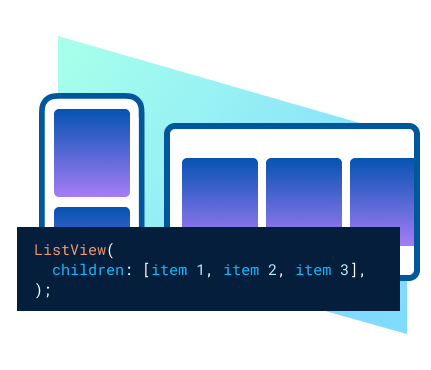
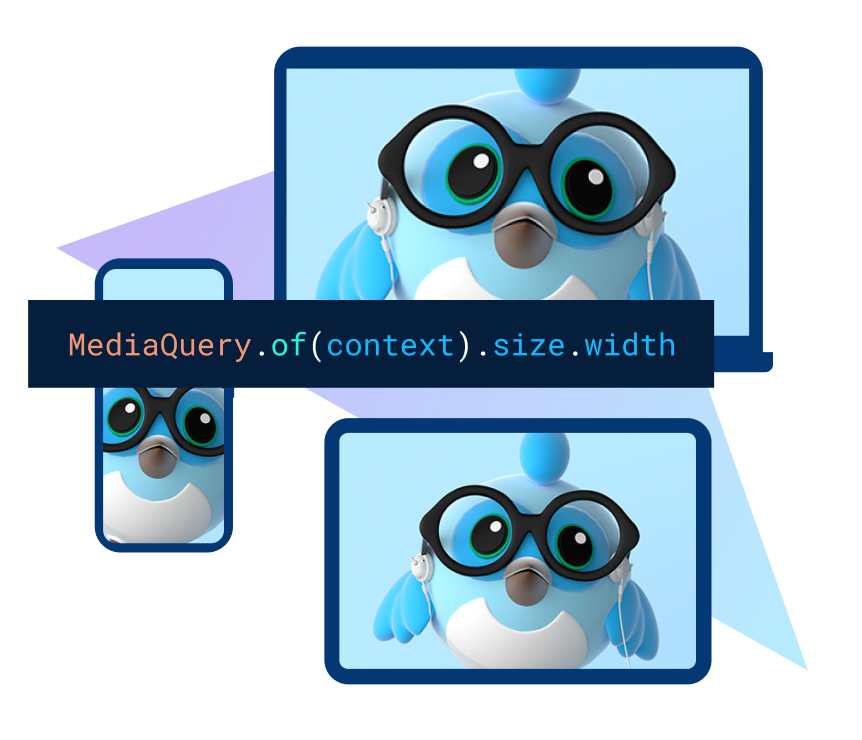

Compartilhe seu código Dart entre aplicativos móveis e da web; web é apenas outro destino de dispositivo para seu aplicativo.
CAdquira usuários além das lojas de aplicativos sem limitações a partir de apenas um clique em uma URL em um navegador da web.

Exiba seu aplicativo em vários dispositivos para iterar e testar rapidamente com base no feedback do cliente.
